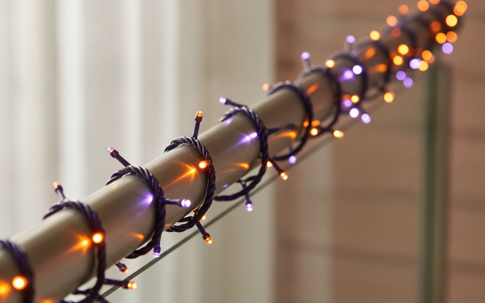
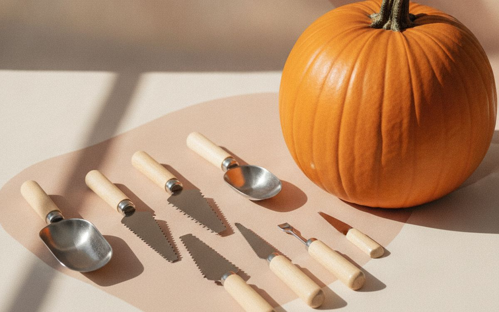
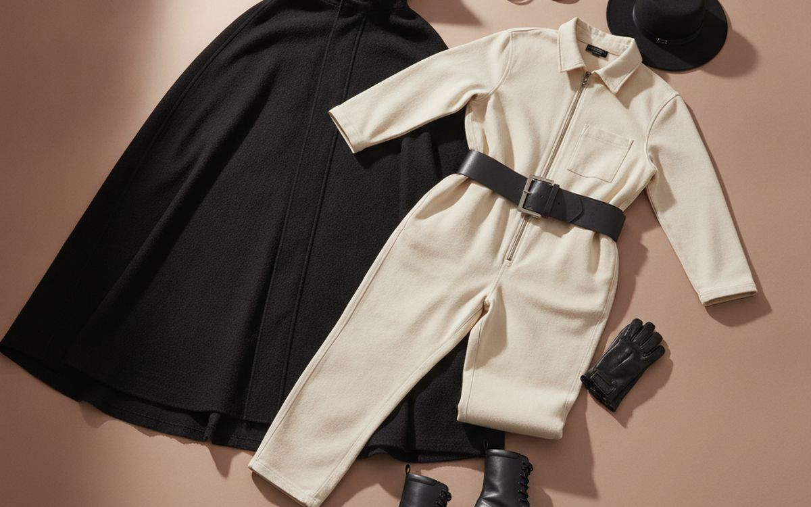
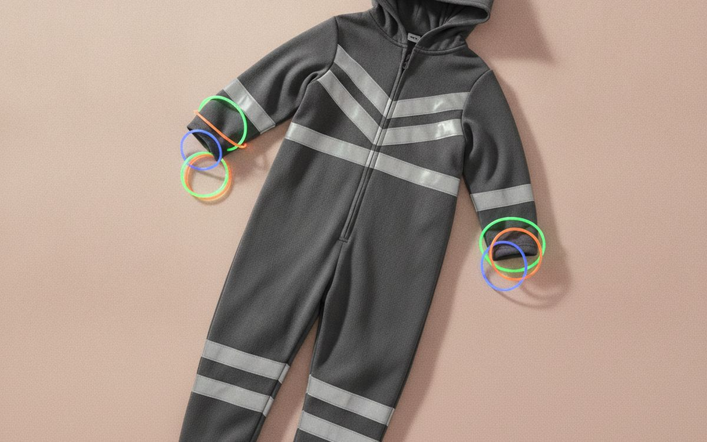
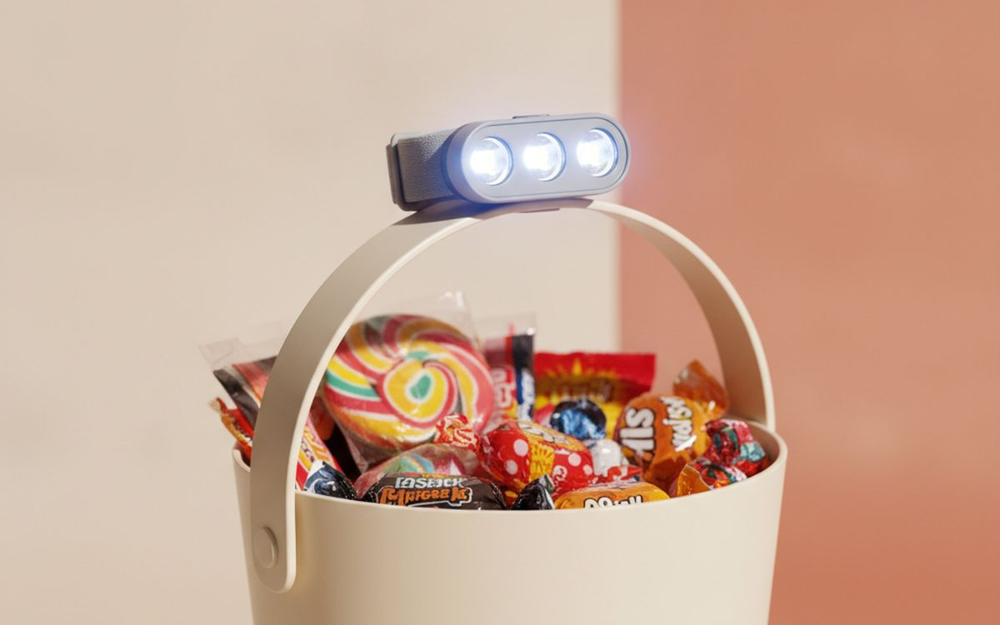
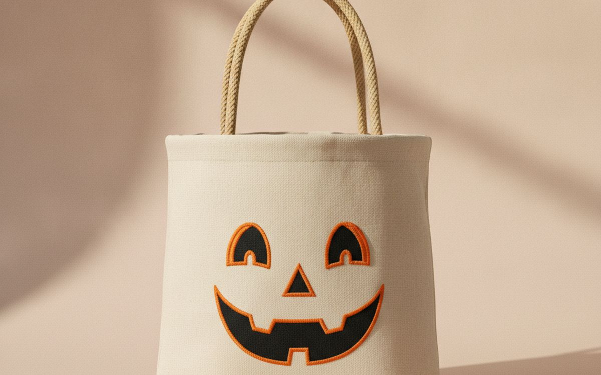
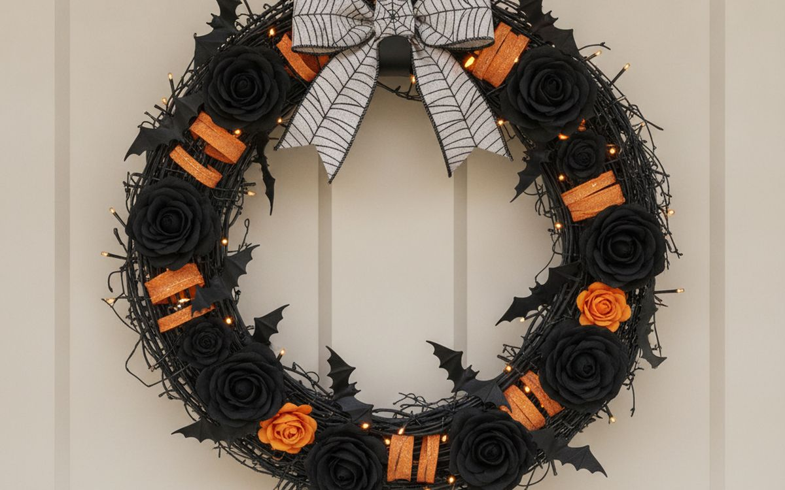
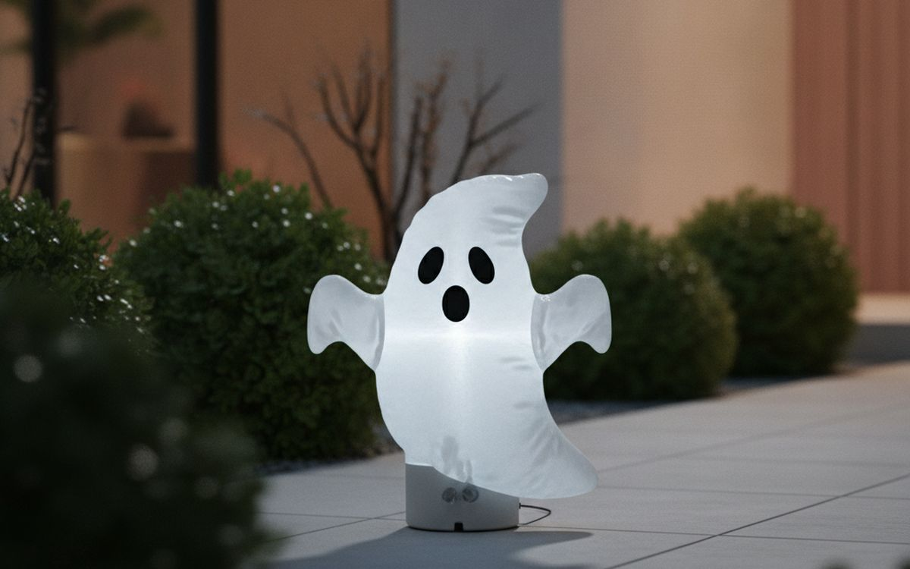

Halloween is the holiday of single-use plastic. Costumes that split at the seam, inflatables that lean sideways after a week, and bags of fake cobweb that end up in the hedge until spring. A lot of it is bought in a panic on October 28th and thrown away on November 1st.
This list is ordered by reuse. The best Halloween buys are the ones that come out of a box every year and still work: good lights, a sturdy base costume you can restyle, and safety kit for the kids. The seasonal stuff at the bottom is fun, but cheap for a reason.
Prices below are approximate street prices at the time of writing and move around constantly, especially during sale events. Treat them as a rough band for budgeting, not a quote. Always check the live listing before you buy.
The short version
Outdoor-rated LED string lights in orange and purple
The decoration that earns its box space
Disclosure. The links on this page are affiliate links. If you buy through one we may earn a commission at no extra cost to you. It does not affect what makes this list or the order it is in.
How we picked
These picks come from consumer safety guidance, decorating communities and long-run owner reports, cross-checked against current retail listings. We have not personally tested every item here. We favoured reusable, outdoor-rated and child-safe items, and left out anything that sheds or breaks after one use. Order early: shipping from overseas sellers can take two to three weeks.
At a glance
Prices are approximate at the time of writing and change often.
The picks

01 · The decoration that earns its box spaceOutdoor-rated LED string lights in orange and purple
Lights do more to set a Halloween mood than any prop, and good ones last for years. Look for outdoor or IP44-rated LEDs with a timer, so they switch on at dusk without you thinking about it. Plug-in versions are brighter and more reliable than battery ones for a porch. Buy warm orange and purple, and they can double as autumn lights through November. The case for it: sets the mood instantly, reusable for years, and timers save effort. The trade-off is real: cheap sets fail at the connectors and check outdoor rating before using outside, so weigh that against how often it would actually get used.
$15-35Trade-off: Cheap sets fail at the connectors
Why it is here
- Sets the mood instantly
- Reusable for years
- Timers save effort
Worth knowing
- Cheap sets fail at the connectors
- Check outdoor rating before using outside
02 · Safe glowing jack-o'-lanternsLED flameless candles for pumpkins
Real candles in pumpkins on a busy doorstep are a fire risk around costumes, many of which are flammable. Flickering LED tea lights look close to real flame, last for days, and do not scorch the pumpkin lid. Remote or timer versions switch on by themselves. A pack of twelve covers several years of pumpkins. The case for it: no fire risk near costumes, lasts all week, and reusable. The trade-off is real: less bright than a real flame and coin batteries are a swallowing hazard for toddlers, so weigh that against how often it would actually get used.
$12-25Trade-off: Less bright than a real flame
Why it is here
- No fire risk near costumes
- Lasts all week
- Reusable
Worth knowing
- Less bright than a real flame
- Coin batteries are a swallowing hazard for toddlers

03 · Carving without kitchen knivesA pumpkin carving kit
Kitchen knives are the wrong tool for pumpkins: they slip, and most carving injuries happen that way. A cheap kit with small serrated saws, a scoop and a poker makes carving safer and gives much more detailed results. Kids can use the saws with supervision. Keep the kit in the Halloween box for next year. The case for it: safer than kitchen knives, detailed designs are easier, and kid-friendly with supervision. The trade-off is real: cheap saws bend in thick pumpkins and scoops in kits are often too small, so weigh that against how often it would actually get used.
$10-20Trade-off: Cheap saws bend in thick pumpkins
Why it is here
- Safer than kitchen knives
- Detailed designs are easier
- Kid-friendly with supervision
Worth knowing
- Cheap saws bend in thick pumpkins
- Scoops in kits are often too small

04 · Costumes you can restyleA reusable base costume (jumpsuit, cape or robe)
Packaged costumes are often thin and fit badly. A solid base piece, such as a black hooded cape, a coloured jumpsuit or a robe, becomes a witch, a vampire, a wizard or an astronaut depending on the accessories. It is warmer, better made and reused for dress-up days and parties all year. Kids in particular get more out of one good cape than three packaged costumes. The case for it: one piece, many costumes, better made than packaged sets, and warmer on cold nights. The trade-off is real: you add the accessories yourself and check sizing charts; overseas sizing runs small, so weigh that against how often it would actually get used.
$20-45Trade-off: You add the accessories yourself
Why it is here
- One piece, many costumes
- Better made than packaged sets
- Warmer on cold nights
Worth knowing
- You add the accessories yourself
- Check sizing charts; overseas sizing runs small

05 · Trick-or-treat visibilityReflective tape and glow sticks
Halloween is one of the most dangerous nights of the year for child pedestrians, and dark costumes make it worse. A few strips of reflective tape on the costume and bag, plus glow bracelets, make kids visible to drivers. It costs almost nothing and does not spoil the costume. Adults walking with them should wear some too. The case for it: makes kids visible to drivers, very cheap, and kids love glow sticks anyway. The trade-off is real: glow sticks are single-use and tape may not stick to fluffy fabric, so weigh that against how often it would actually get used.
$8-15Trade-off: Glow sticks are single-use
Why it is here
- Makes kids visible to drivers
- Very cheap
- Kids love glow sticks anyway
Worth knowing
- Glow sticks are single-use
- Tape may not stick to fluffy fabric

06 · Dark streetsA small LED headlamp or flashlight for kids
Pavements are uneven and many porches are poorly lit. A small headlamp keeps both hands free for a bucket and railings, and a flashlight lets kids see steps. Choose one with a soft strap and a low setting. It gets used again for camping, power cuts and reading under the covers. The case for it: hands-free light, safer on steps and curbs, and used all year. The trade-off is real: batteries need checking beforehand and bright beams can dazzle other kids, so weigh that against how often it would actually get used.
$8-15Trade-off: Batteries need checking beforehand
Why it is here
- Hands-free light
- Safer on steps and curbs
- Used all year
Worth knowing
- Batteries need checking beforehand
- Bright beams can dazzle other kids

07 · Kids who do the whole streetA sturdy trick-or-treat bucket or bag
Thin plastic buckets snap at the handle halfway down the street. A sturdy fabric bag with a reflective panel, or a solid bucket with a good handle, carries a full haul and comes back every year. Light-up buckets add visibility. Name it; there are many identical buckets on a busy street. The case for it: holds a full night's haul, reusable every year, and reflective options help safety. The trade-off is real: light-up types need batteries and fabric bags can be hard to see into, so weigh that against how often it would actually get used.
$8-20Trade-off: Light-up types need batteries
Why it is here
- Holds a full night's haul
- Reusable every year
- Reflective options help safety
Worth knowing
- Light-up types need batteries
- Fabric bags can be hard to see into
08 · Makeup that washes offWater-based face paint from a known brand
Masks limit vision and breathing, so face paint is often the better choice for kids. Buy water-based paint from a known cosmetic brand, such as Snazaroo or Mehron, and test a small patch on the arm the day before. Cheap unbranded paints can cause rashes. Remove with soap and water before bed. The case for it: safer than masks for vision, washes off easily, and reused for parties. The trade-off is real: unbranded paints can irritate skin and patch test first, so weigh that against how often it would actually get used.
$12-25Trade-off: Unbranded paints can irritate skin
Why it is here
- Safer than masks for vision
- Washes off easily
- Reused for parties
Worth knowing
- Unbranded paints can irritate skin
- Patch test first

09 · Easy porch decorA door wreath or porch sign
A good wreath or a painted porch sign gives the house a finished look with no setup. Choose one with durable materials that store well flat, so it does not get crushed in a box. Autumn-leaf wreaths with a few removable Halloween picks can stay up through Thanksgiving. The case for it: instant porch decor, lasts for years, and some double as autumn decor. The trade-off is real: storage space in a flat box and cheap wreaths shed glitter, so weigh that against how often it would actually get used. Priced around $20-45, it is easy to justify even if it only ends up getting occasional rather than daily use.
$20-45Trade-off: Storage space in a flat box
Why it is here
- Instant porch decor
- Lasts for years
- Some double as autumn decor
Worth knowing
- Storage space in a flat box
- Cheap wreaths shed glitter

10 · The street's showpieceA small inflatable or animated prop
If you want to be the house the kids talk about, one well-chosen inflatable or animated prop is enough. Mid-size inflatables are cheaper to run and easier to store than giant ones. Stake them properly; wind knocks them over and fans burn out when blocked. Check for outdoor ratings on anything that plugs in. The case for it: the fun, eye-catching piece, kids love it, and packs down small for storage. The trade-off is real: fans fail and fabric tears in wind and needs an outdoor power outlet, so weigh that against how often it would actually get used.
$40-100Trade-off: Fans fail and fabric tears in wind
Why it is here
- The fun, eye-catching piece
- Kids love it
- Packs down small for storage
Worth knowing
- Fans fail and fabric tears in wind
- Needs an outdoor power outlet
Common questions
When should I order Halloween items online?
By early October. Items from overseas sellers can take two to three weeks to arrive.
Are real candles in pumpkins safe?
They are a fire risk near costumes and doorsteps. LED candles look close to real and are much safer.
How do I keep kids safe trick-or-treating?
Reflective tape, glow sticks, a flashlight, face paint instead of masks, and an adult with younger children.
What Halloween decorations are worth buying once?
Lights, LED candles, a carving kit and a good wreath. They last for years.
Today's deals
See what is discounted right now.
Deals →← All guides
As an AliExpress affiliate we earn from qualifying purchases. Prices and availability are accurate as of the date of publication and may change.